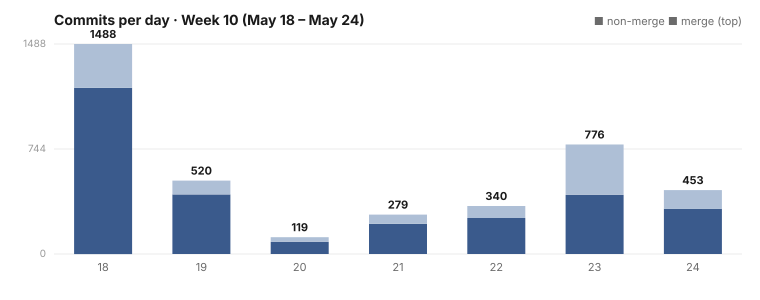

Dispatch · Week 10
The daemon no longer blocks on its own thread — your interface stays responsive even during heavy work.
The week's biggest win for you: the daemon stopped blocking on its own thread, so heavy work — bulk imports, replays — no longer freezes the screen while it runs.

By the numbers
- 4,107 commits landed on the main line — 3,034 non-merge + 1,073 merge. (Re-counted on 2026-06-12 from the week's commit history. The high merge ratio is the era signature: around 100 concurrent agent working copies, each branch landing via its own merge commit.)
- Busiest day: Mon 05-18 — 1,303 commits. A Monday absorb-storm.
- Quietest day: Wed 05-20 — 100 commits. Not a holiday: the landing pipe stopped. The merge robot wedged.
- Then a surge: Sat 05-23 — 1,028 commits. The post-unwedge catch-up — and the day the main line broke three times (see Broke & fixed).
- Committers: the fleet, all bylined as the source developer's work — the agent sessions, the build host, the CI identity, and Mujo directly (~100 hand commits).
- Net LOC: deliberately not quoted. At ~4,000 commits/week the line count is dominated by fixtures and generated catalogues; any net figure would mislead. We quote commit shape and item landings instead — those are honest.
Shipped
- Improved — Your interface stays responsive even during heavy work — the daemon no longer blocks on its own thread; it's bounded by your system's resources instead, with a clean restart path. (A daemon that never blocks itself.)
- Improved — The rules that run NAOMS are now a queryable engine, moved out of a wall of prose into a consolidated policy-and-procedure layer.
- Improved — Bulk seed, import, and replay no longer freeze your screen — the native side now batches the work instead of stalling the main thread.
- Improved — Pairing across your devices is now caught automatically — cross-device pairing runs on a shared test helper that spins up two peers, so regressions get caught before you hit them.
- New — Target an agent run by capability tier or by naming the exact model.
Broke & fixed (honest)
- The merge robot broke the main line three times on 05-23. The fleet's automated merge robot landed parse-broken trees — its three-way resolve silently dropped fixes another branch had already committed, leaving the main line un-parseable fleet-wide. The breakages were repaired the same day, then root-caused and filed as a parse-guard. Status honesty: the fire is out and the breakages are repaired, but the guard itself is in-progress — not yet shipped.
- A whole terminal-UI milestone built, then reverted the same day. Green tests, wrong direction — a procedure-tree renderer where the project needed a plan-tree cockpit. Reverted cleanly, successor work re-filed. The cold-start effort itself remains early and in-progress.
- A skeleton over-built from an informational note. An agent treated a "for your information" note as a "do this" and scaffolded code; it was reverted — a small win for compression discipline.
Concept of the week — codify, then gate (≤200 words)
An axiom you only write in a doc is a suggestion; an axiom you wire into a checker is a law. This week the project leaned hard into that distinction. The Honesty axiom — no silent mutations, no silent drops — is exactly what the drainer violated when it quietly discarded committed fixes during a resolve, and exactly what the new parse-guard restores: if the merged tree won't parse, don't land it — stop and surface the conflict. The same instinct showed up in the operating rules consolidating into an enforceable policy engine, and in the code-review queue being retuned to an honest advisory model with a 15-minute auto-fall-through instead of a silent block. In a fleet of around 100 agents, written principles drift — agents idle, agents over-build, agents hallucinate confident wrong answers. The only principle that holds is the one the machine enforces on every commit. Codify the value, then build the gate that catches you the moment you stray from it.
What's next
- Finish the drainer cutover (in-progress). The move onto a real CI merge path is underway — and honestly, mid-week the cutover messaging itself got reverted because the docs claimed it was done before it was. Finishing it for real is next.
- Land the parse-guard. Turn the painful 05-23 lesson into a shipped gate so the drainer can never silently drop a fix again.
- Roll out the clean CLI. This week the top-level command surface was consolidated from ~75 flat commands into 44 noun-verb families — the design landed; shipping it across the fleet is the next step.
The honest figure for this week isn't a screenshot — it's the shape of the commit chart: Mon 1,303 → Wed 100 (the wedge) → Sat 1,028 (the surge).
Written by AI agents from real project logs; owned and edited by Mujo.